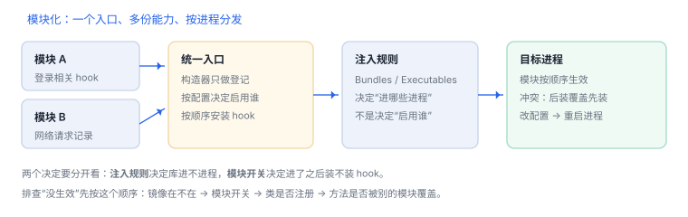

tweak 模块化：入口、开关与冲突
一个入口、多份能力；注入规则管“进不进程”，模块开关管“装不装 hook”
真实项目不会只写一个 hook。多个能力放在同一个包里，就需要一个统一入口负责登记与排序；而“进不进程”和“启不启用”是两件不同的事，混在一起就会出现“明明装了却没反应”。
场景 你加了第二个功能，装完后第一个功能失灵了。两个模块都 hook 了同一个方法，后装的那个把先装的覆盖掉了。
1. 两个决定要分开
| 决定 | 由谁负责 | 写在哪 |
|---|---|---|
| 这个库进不进目标进程 | 注入规则 | Filter 的 Bundles / Executables |
| 进了之后装不装 hook | 模块开关 | 配置项，构造器里读 |
| 多个模块谁先生效 | 登记顺序 | 统一入口里的安装表 |

2. 统一入口长什么样
构造器只做登记
typedef void (*Installer)(void);
static const Installer kInstallers[] = {
installLoginHooks,
installNetworkHooks,
};
__attribute__((constructor))
static void boot(void) {
dispatch_async(dispatch_get_main_queue(), ^{
for (size_t i = 0; i < sizeof kInstallers / sizeof kInstallers[0]; i++) {
if (moduleEnabled(i)) kInstallers[i](); // 开关 + 顺序都在这里
}
});
}要点：构造器里不做重活，只把安装动作排进主队列；顺序由数组决定，开关由配置决定。
3. 冲突的三种形态
| 形态 | 现象 | 处理 |
|---|---|---|
| 覆盖 | 后装的把先装的换掉，功能“消失” | 合并成一个安装点，内部串联 |
| 递归 | 两个模块互相调用对方实现，栈溢出 | 只保留一个入口，记录而非转发 |
| 顺序敏感 | 先解密后记录才拿到明文 | 明确声明依赖顺序 |
4. 原理推演：为什么“装了没反应”要去查两层
注入发生在进程启动、模块安装发生在构造器，两者是不同阶段的两道闸门。库没进去，进程里根本看不到镜像；库进去了但开关关着，安装表里的函数不会执行。把两层分开查，比反复重装有效。
5. 一次真实排查记录：第二个模块上线后第一个失灵
- 现象：两个功能都装了，只有后装的那个生效。
- 先确认都在：镜像列表里能看到包，说明注入规则没问题。
- 再看安装顺序：两个模块 hook 同一方法，后装的覆盖了先装的实现。
- 改结构：把两个 hook 合并到同一安装点，先记录再转调原实现。
- 结论与限制：记录“同方法多模块覆盖”，并注明只对该安装顺序成立。
6. 自测
- 注入规则与模块开关分别决定什么？
- 为什么构造器里建议只做登记？
- 两个模块 hook 同一方法，哪种处理方式最稳？
- “装了没反应”应该按什么顺序排查？